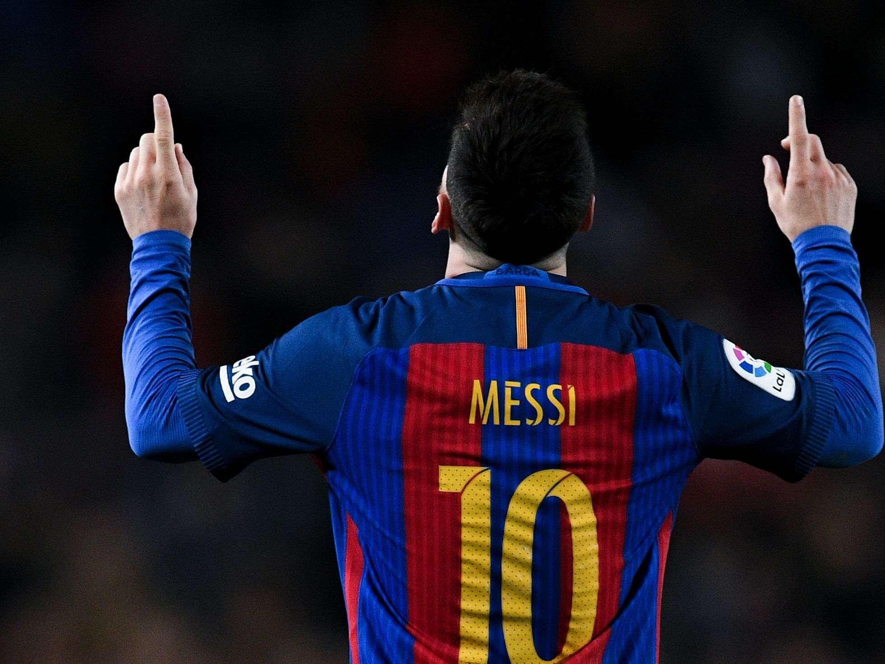
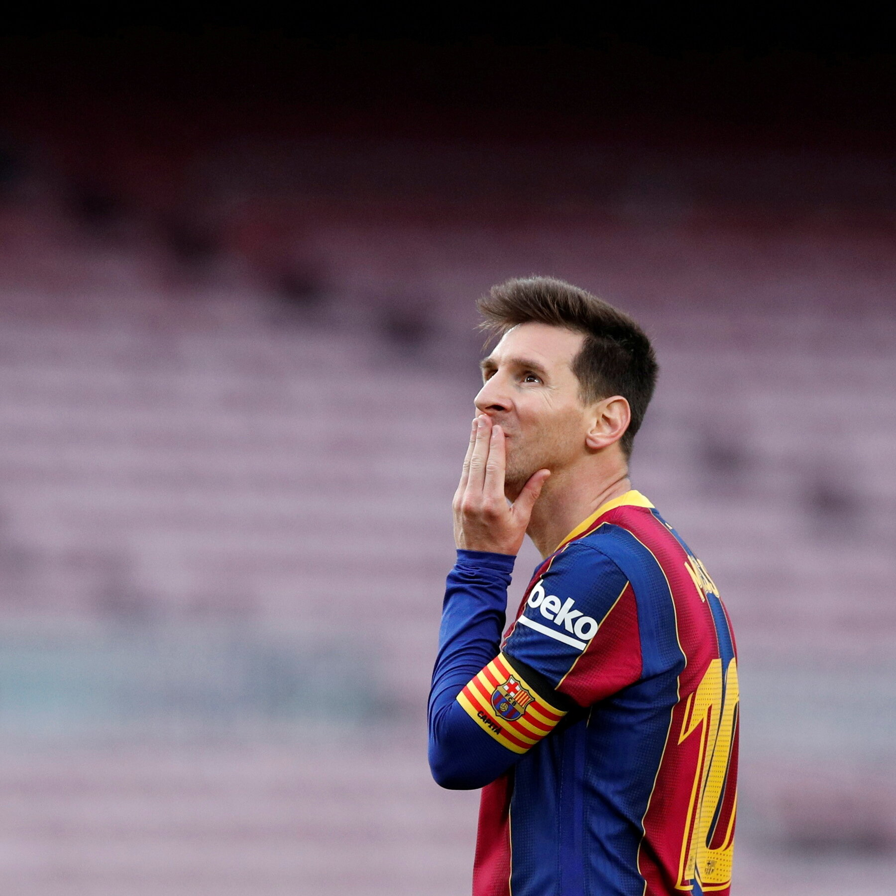
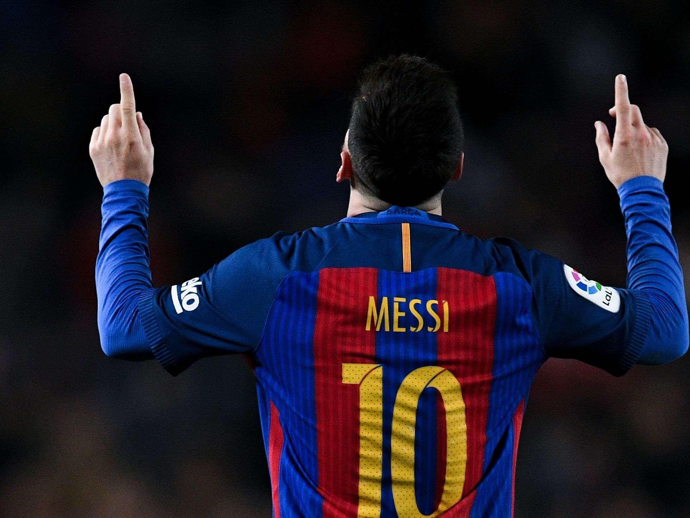
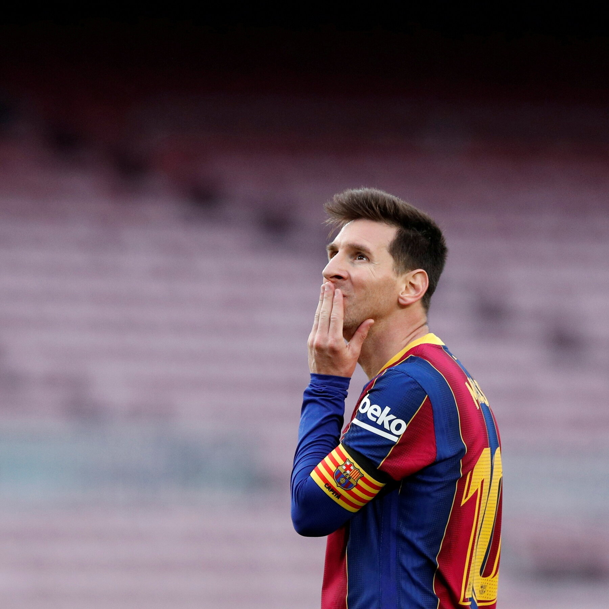

Tot el camp, és un clam
Leo Messi llegó a Barcelona siendo un niño desde su Rosario natal con 13 años. Durante 21 años vistió la camiseta blaugrana ganando 35 títulos, rompiendo todos los récords posibles de ese equipo y convirtiéndose en, para muchos, en el mejor jugador de la historia.
 



Considerado con frecuencia el mejor jugador del mundo y uno de los mejores de todos los tiempos, es el único futbolista en la historia que ha ganado, entre otras distinciones, siete veces el Balón de Oro, seis premios de la FIFA al mejor jugador del mundo y seis Botas de Oro.
¿Es un genio, no? El fútbol no solo son goles, aprendan. Siempre digo que hay que ver más allá. Soy de los que destaca toda la jugada antes de llegar a la finalización, como tiene que ser.
Messi es eso.
Él en sus mejores momentos (casi toda su carrera) se posiciona para recibir la pelota, hace un control orientado, arranca, dribla uno, dribla otro, lo ve todo, entiende todo y pone una pelota de gol o él mismo se encarga de hacerlo.
¿Quién hace eso en un fútbol tan táctico y rígido como el de ahora? Solo él.
Y es que no solo es eso, también interpreta totalmente el juego para encontrar los espacios o por cuál zona es más probable hacer daño.
Es normal que se intente comparar con estadísticas de otros jugadores, pero a pesar de no ser un delantero centro ha batido cualquier cantidad de récords.
Messi es un jugador que juega y hace jugar como ningún otro.
Solo Diego Armando Maradona podría compararse bajo esa circunstancia de tener tanta influencia en un partido de fútbol, pero hay más puntos por los cuales Messi es más que Diego y los demás.